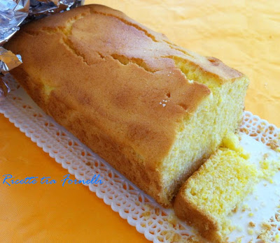

I dolci del mattino
2021.06.24 14:56
Home Contatti Registrati al sito Login utenti Siti web Aiutaci a crescere! Cookie policy Videoricette di Chefsilvia Tv Speciali Speciale Natale Decorazioni di Natale Mercatini di Natale Regali di Natale Menu della Vigilia di Natale Dolci di Natale Drink e Cocktail di Natale Menu di Natale tradizionale Menu di Capodanno Menu di Natale per bambini Tortellini a Natale: ecco come prepararli Menu di Natale per stupire gli ospiti Menu di Natale senza glutine Menu di Natale Vegetariano Menu di Natale Vegano Menu di Natale rapido: 10 ricette last minute Menu rapido della Vigilia di Natale: 10 ricette di pesce Cake Design Tutorials Speciale Pasqua Menu di Pasqua Menu di Pasquetta Decorazione delle uova di Pasqua Come decorare la tavola di Pasqua In tavola a Pasqua Uovo di cioccolato fatto in casa Uovo di cioccolato fatto in casa senza stampo Speciale Carnevale Sapori d'autunno Cucina a microonde Speciale ricette della cucina Toscana Halloween – La cena delle streghe Consigli di cucina La carne - parte 1 La carne - parte 2 Salse e fondi di cottura Il pesce Mise en place - l'arte di apparecchiare 100 modi di cucinare la pasta Cocktail e drinks per l'estate Temperare il cioccolato News Le tre stelle della Guida Michelin Eventi enogastronomici Curiosità varie Chef su Realtime TV Glossario Glossario italiano dei termini di cucina Glossario erbe aromatiche e spezie Glossario dei temini di cucina anglosassoni Glossario dei temini di cucina francese Cucina regionale Gastronomia Italiana Cucina piemontese e valdostana Cucina friulana Cucina trentina Cucina veneta Cucina ligure Cucina lombarda Cucina emiliana e romagnola Cucina toscana Cucina umbra Cucina laziale Cucina abruzzese e molisana Cucina marchigiana Cucina campana Cucina pugliese Cucina della Basilicata Cucina calabrese Cucina siciliana Cucina sarda La cucina delle principali nazioni
Ultime ricette inserite:
Crostata al limone
Insalata di riso ai frutti di mare
Carciofi ripieni di gamberi
Cozze gratinate
Carpaccio di manzo, carciofi e grana
Insalata di baccalà
Waffle con gelato e frutta
Home Speciali I dolci del mattinoI dolci del mattino
Croccanti biscotti, soffici plumcake, golose crostate o fragranti briosche tutti riuniti in un unico speciale per consentirvi di scegliere al meglio il dolce che potrete gustare al vostro risveglio.
Dalle sfogliatelle alle mele, alla crostata di marmellata, al goloso plumcake al cioccolato o i deliziosi biscotti canestrelli abbiamo pensato di dedicare una sezione ad uno dei momenti piu' importati della giornata, la prima colazione.
Naturalmente tutte le ricette sono spiegate in modo chiaro e semplice perchè pensate proprio per chi non ha molto tempo da dedicare alla cucina ma vuole lo stesso deliziare se stesso e la propria famiglia con piccole e dolci creazioni. Non c'è limite alla fantasia per quanto riguarda forme, dimensioni o farciture e allora buon divertimento con le ricette di ChefSilvia dei dolci per la prima colazione
Ecco le nostre proposte:
Girelle alla Nutella Pangoccioli Fetta al latte Camille Biscotti al Cocco Biscotti occhi di bue Canestrelli Cantuccini alle mandorle Banana bread Amor polenta Torta soffice allo yogurt Plumcake al marsala Plumcake al cioccolato Ciambella alla panna Ciambella ai frutti di bosco Torta marmorizzata Pinolata Ciambellone Crostata ai frutti di bosco Crostata di mele Crostata al limone Crostata ricotta e cioccolato Sfoglie alle mele e cannella Torta di mele Treccia di brioche Treccia di pan brioche alla Nutella Muffin ai frutti di bosco e mandorle Muffin ricotta e cioccolatoMenu:
Ricette estive Piatti freddi Ricette facili Aperitivi Antipasti Ricette di pasta Primi piatti Secondi piatti Pizza e focacce Ricette di dolci Frullati e frappé Gelati e sorbetti Menu delle feste Ricette vegetariane Ricette per bambini Ricette francesi Ricette afrodisiache Ricette base Specialità regionali Ricettario Sapori dal mondo Ricette di Natale Ricette di Carnevale Ricette di San Valentino Ricette di PasquaSocial Networks
Cucinare con Chef Silvia TweetSeguici su:
I dolci del mattino
Consigli di cucina
Ricette estive: piatti leggeri e rapidi Pulire, cucinare e presentare il pesce. Il riso italiano: le varietà più diffuse. Mise en place - l'arte di apparecchiare La tradizione culinaria delle regioni italiane! 100 ricette per cucinare la pasta! Come temperare il cioccolato! le migliori salse per cucinare con gusto!
La pasticceria
Come fare i Bignè Uno dei dolci più golosi: il Tiramisù. Il classico dolce Toscano: i Cantuccini La stella di Natale Il gelato fatto in casa. I dolci di Natale Marmellate e conserve fatte in casa.
Novità di Chef Silvia
Ricette di estive : i piatti per l'estate Cocktails e aperitivi alcolici e analcolci Ricette francesi: selezione di Chefsilvia Le ricette di Natale e delle feste Ricette di Pasqua e Pasquetta! Ricette Toscane Ricette Vegetariane il Menu delle Feste
Perché Chef Silvia?
Il portale Chef Silvia nasce dalla passione di Silvia per la cucina di qualità: ricette semplici ed efficaci da commentare e condividere.
Recensioni
Nuove ricette e recensioni vengono aggiunte ogni giorno al sito chefsilvia.it. Nuova sezione sulle ricette con la pasta . Buona lettura.
Ricettario di Chef Silvia
Con l'aiuto del ricettario conoscerete nuove ricette di cucina per le occasioni speciali o per i pranzi e le cene di tutti i giorni.
Gastronomia
Rimani aggiornato su gli eventi culinari: la sezione news ti informa su tutti gli eventi, e le notizie che riguardano la gastronomia.
Copyright © 2021 Ricette di cucina di Chef Silvia. Tutti i diritti riservati. Joomla! è un software libero rilasciato sotto licenza GNU/GPL.